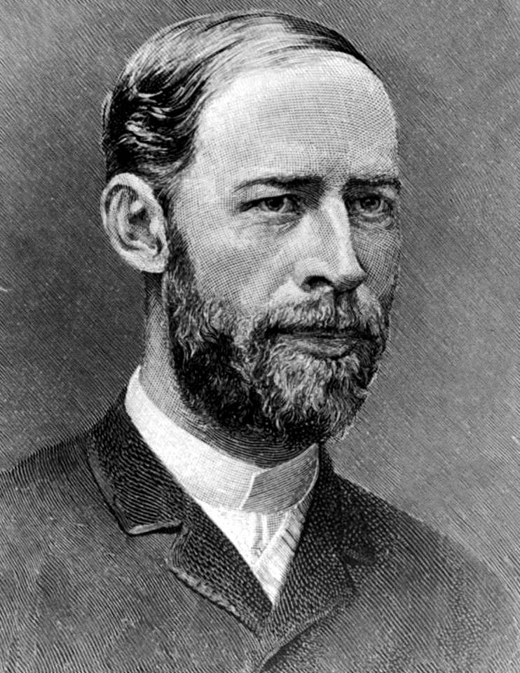
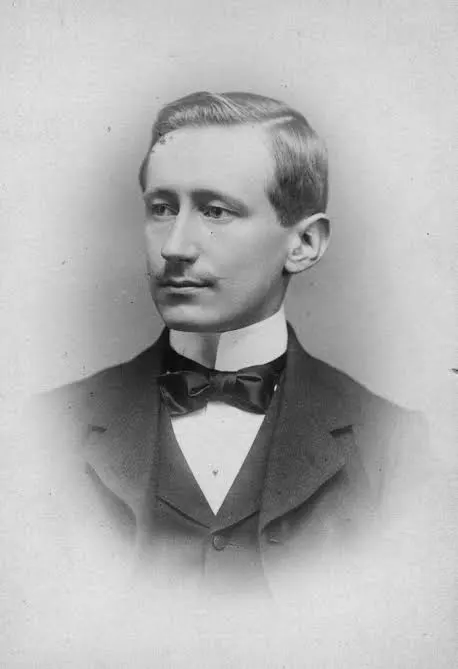
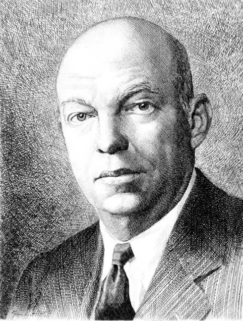

Heinrich Rudolf Hertz foi um físico alemão que nasceu em Hamburgo no dia 22 de fevereiro de 1857 e faleceu precocemente em Bonn no dia 1 de janeiro de 1894, aos 36 anos de idade, vítima de uma infecção. Filho de uma família próspera, ele demonstrou forte interesse por ciências e mecânica desde a infância. Ele iniciou seus estudos superiores na área de engenharia, mas logo migrou para a física, estudando em Dresden, Munique e Berlim, onde se tornou aluno e assistente do renomado físico Hermann von Helmholtz. Ao longo de sua carreira acadêmica, Hertz lecionou na Universidade de Kiel, na Escola Politécnica de Karlsruhe e na Universidade de Bonn.
A sua maior contribuição para a ciência ocorreu entre 1887 e 1888, quando ele construiu um oscilador experimental e conseguiu gerar e detectar ondas eletromagnéticas no espaço. Esse experimento comprovou na prática a teoria eletromagnética desenvolvida anos antes por James Clerk Maxwell, que até então era puramente matemática. Hertz demonstrou que essas ondas invisíveis viajavam à velocidade da luz e possuíam propriedades de reflexão, refração e polarização. Embora ele mesmo não tenha previsto a utilidade comercial de sua descoberta, suas pesquisas fundamentaram as bases para a criação do rádio, da televisão, do radar e de todas as tecnologias de comunicação sem fio que utilizamos hoje. Como forma de reconhecimento eterno ao seu trabalho, a unidade de medida de frequência no Sistema Internacional de Unidades foi batizada como hertz.

Guglielmo Marconi nasceu em Bolonha, Itália, em 25 de abril de 1874, no seio de uma família aristocrática e rica. Desde a infância, ele demonstrou um interesse profundo pela física e pela eletricidade, estudando de forma autodidata os trabalhos de cientistas como Heinrich Hertz. Sem formação acadêmica formal, ele transformou o sótão e o celeiro da propriedade de seu pai em um laboratório improvisado aos vinte anos de idade. Após ter seus experimentos iniciais ignorados pelo governo italiano, ele mudou-se para a Inglaterra em 1896, onde encontrou apoio financeiro e patenteou seus inventos. Ao longo da vida, fundou empresas globais de telecomunicações, recebeu o título de marquês e o Prêmio Nobel de Física em 1909, vindo a falecer em Roma no dia 20 de julho de 1937.
A maior contribuição de Marconi para a humanidade foi a criação do primeiro sistema prático de telegrafia sem fios, unindo teorias científicas existentes em um produto comercial funcional. Ele revolucionou as comunicações ao realizar a primeira transmissão de rádio através do Canal da Mancha em 1899 e a histórica primeira transmissão transatlântica em 1901, conectando a Inglaterra ao Canadá. Seus sistemas de rádio salvaram milhares de vidas no mar, permitindo o pedido de socorro e o resgate dos sobreviventes de grandes desastres marítimos, como os naufrágios do Republic em 1909 e do Titanic em 1912. Suas pesquisas subsequentes com ondas curtas e micro-ondas lançaram as bases estruturais para o desenvolvimento do rádio moderno, da televisão e dos sistemas globais de comunicação sem fio.

Edwin Howard Armstrong nasceu em Nova Iorque, nos Estados Unidos, em 18 de dezembro de 1890. Fascinado pela física e pelas comunicações desde a adolescência — inspirado principalmente pelos feitos de Guglielmo Marconi —, ele construiu uma imensa antena experimental no quintal de sua casa ainda jovem. Ingressou na Universidade Columbia, onde se formou em Engenharia Elétrica em 1913 e mais tarde atuou como professor e pesquisador. Armstrong serviu como major no Corpo de Sinais do Exército dos Estados Unidos durante a Primeira Guerra Mundial, período no qual desenvolveu tecnologias militares cruciais. Apesar de sua genialidade e da riqueza acumulada com patentes, ele enfrentou severas e desgastantes disputas judiciais contra grandes corporações (como a RCA) e outros inventores pelo controle de suas criações. Consumido pelo estresse financeiro e emocional dessas batalhas legais, o inventor tragicamente tirou a própria vida em Nova Iorque, em 31 de janeiro de 1954.
A maior contribuição de Armstrong para a humanidade foi a invenção do rádio FM (Frequência Modulada) em 1933, que revolucionou as telecomunicações ao eliminar os chiados e a estática comuns das transmissões em AM. Além do FM, ele desenvolveu três circuitos eletrônicos fundamentais que moldaram a eletrônica moderna: o circuito regenerativo (1912), que permitiu a ampliação e geração eficiente de sinais de rádio; o circuito super-heteródino (1918), uma arquitetura de recepção de alta sensibilidade usada até hoje na esmagadora maioria dos rádios, televisores e radares do planeta; e o circuito super-regenerativo (1922). Suas patentes de FM também foram cruciais para o exército na Segunda Guerra Mundial e serviram como base para a criação do rádio multiplex (que permite transmissões simultâneas e som estéreo) e para os sistemas de comunicação espacial da NASA.
https://pt.wikipedia.org/wiki/Heinrich_Hertz
https://mundoeducacao.uol.com.br/fisica/heinrich-hertz.htm
https://www.dw.com/pt-br/1857-nascia-o-f%C3%ADsico-heinrich-hertz/a-778396
https://rce.casadasciencias.org/art/2015/005/
https://www.ebiografia.com/guilherme_marconi/
https://pt.wikipedia.org/wiki/Guglielmo_Marconi
https://en.wikipedia.org/wiki/Edwin_Howard_Armstrong
https://www.fpc.pt/pt/edwin-howard-armstrong-o-inventor-da-radio-fm/